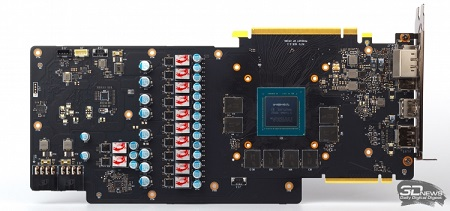

Видеокарта GeForce RTX обеспечивает лучший игровой процесс на ПК. Обладая всеми возможностями архитектуры GPU NVIDIA Turing и революционной платформы RTX, видеокарты серии RTX 20 объединяют технологии трассировки лучей в реальном времени, искусственного интеллекта и программируемые шейдеры. Это абсолютно другой игровой опыт.
MSI GeForce RTX 2080 GAMING X TRIO — это большая и тяжелая видеокарта даже по сравнению с RTX 2080 Founders Edition, не говоря уже об иных версиях GeForce GTX 1080, подходящих под материнские платы форм-фактора Mini-ITX. Устройство чрезвычайно велико в длину (327 мм), а в толщину оно занимает 2,5 слота расширения. Для обдува радиатора MSI, как и в предыдущем поколении видеокарт под маркой GAMING, применяет комбинацию из одного вентилятора диаметром 90 мм и двух по 100, только меньшая крыльчатка теперь расположена не по центру, а ближе к видеовыходам. Скорость вентиляторов регулируется таким образом, что при температуре GPU ниже 56 °C вращение полностью прекращается, а в пределах 60 °C работают только две из трех крыльчаток. Радиатор кулера содержит семь тепловых трубок, зажатых между блоком ребер и никелированной медной подошвой, которая прилегает к кристаллу GPU. Другая пластина облеплена термопрокладками для отвода тепла от управляющей электроники и транзисторов системы питания. Еще несколько прокладок просто насажены на перпендикулярные края радиаторных ребер в тех местах, где на печатной плате распаяны не столь горячие элементы, включая конденсаторы VRM.
Все микросхемы GDDR6 покрыты еще одним листом алюминия, который вместе с пластиной на оборотной стороне печатной платы обеспечивает жесткость конструкции видеокарты. Кстати, задняя пластина MSI GeForce RTX 2080 GAMING X TRIO непривычно толстая и даже участвует в охлаждении текстолита за счет термопрокладок, расположенных под местами распайки GPU и чипов RAM.

Конечно, такая статусная модель, как MSI GeForce RTX 2080 GAMING X TRIO, не может обойтись без RGB-подсветки корпуса. Оттенок и режим работы светодиодов можно выбрать в фирменном приложении Mystic Light.
В основе MSI GeForce RTX 2080 GAMING X TRIO лежит печатная плата оригинального дизайна с усиленным VRM. В то время как в Founders Edition преобразователь напряжения построен по схеме 8 + 2, MSI использует 10 фаз для питания графического процессора и 2 для чипов GDDR6. Как и на всех остальных платах для GPU семейства Turing, здесь используются ключи с интегрированным драйвером (DrMOS) — конструкция, позволяющая регистрировать напряжение на стоке транзисторов с максимальной точностью и частотой. Функцию ШИМ-контроллера выполняет микросхема uPI uP9512P, которая умеет варьировать число активных фаз с целью сохранить высокий КПД при сниженном энергопотреблении. Кроме того, внешнее питание на MSI GeForce RTX 2080 GAMING X TRIO подается через два восьмиконтактных разъема вместо одного восьмиконтактного и одного шестиконтактного, как на эталонной плате.
Чипы памяти GDDR6 производства Micron с маркировкой 8PA77 D9WCW работают со штатной пропускной способностью 14 Гбит/с на контакт. Маркировка графического процессора TU104-400A-A1 с буквой А в среднем блоке символов означает, что чип прошел отбор для оверклокерских моделей GeForce RTX 2080 по параметрам рабочих частот и напряжения питания.
В последние годы мы привыкли, что даже премиальные графические карты не комплектуются богатым набором аксессуаров. Но к MSI GeForce RTX 2080 GAMING X TRIO, помимо бумажной документации, прилагаются две полезные детали — металлическая планка, поддерживающая свободный край платы в корпусе ПК, и переходник с шестиконтактного разъема дополнительного питания на восьмиконтактный.
Что же касается стоимости видеокарты, то обе модификации GeForce RTX 2080 под маркой GAMING во время подготовки обзора еще невозможно было купить в российских интернет-магазинах, и только на американской площадке newegg.com нашлось одно предложение MSI GeForce RTX 2080 GAMING X TRIO по цене $850. Ускорители 20-й серии все еще в дефиците, так что их реальные розничные цены далеки как от значения, рекомендованного NVIDIA для GeForce RTX 2080 ($699), так и от цены RTX 2080 Founders Edition в собственном интернет-магазине производителя GPU ($799).